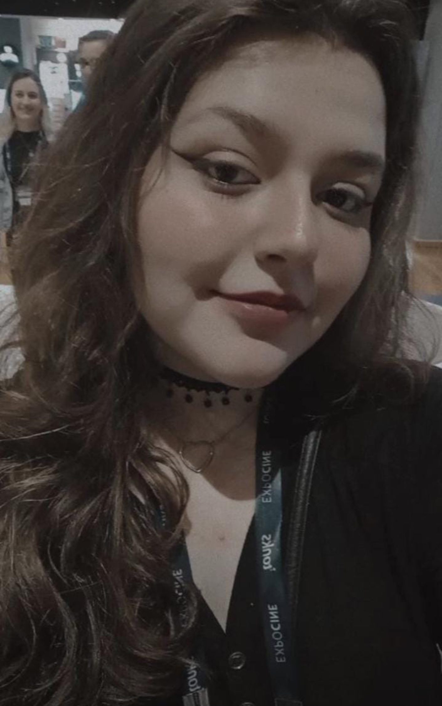

Sobre mim
Desde muito nova, tenho minha paixão pela escrita. Escrevendo livros, roteirizado vídeos para aplicativos e trabalhando como corretora publicitária para empresas. Hoje, com a faculdade, tenho o grande sonho de transferir minhas histórias do papel para as grandes telas de cinema e streamings! Sou muito criativa, busco desafios e novas histórias para contar…
Apesar de muito jovem, tive uma infância e adolescência de muitos altos e baixos. Venho de periferia, passando por diversos preconceiros por conta do peso e da situação financeira de minha família na época. Ter passado por isso, com certeza, fez com que eu fosse a pessoa que sou hoje: humilde, honesta e empática. Sempre agarrei todas as oportunidades que tive, dando garra e força a cada passo!
Sou muito comunicativa, lidando bem com trabalhos em grupo e gestão de pessoas. Como meu curso é de comunicação, tenho como obrigação dar o melhor de mim. Afinal, o cinema está pode influenciar pessoas, e essa arma deve ser dada a pessoas bem intencionadas e firmes.
Sou muito grata pela oportunidade que tenho de estar na ESPM, já que é uma realidade para poucos. Anseio muito para começar minha carreira como roteirista, já que é a área em que mais me identifico e mais amo trabalhar. Escrever é minha maior paixão! Sei que tenho uma longa jornada a trilhar, com muitos altos e baixo para enfrentar, mas com muita dedicação, foco e estudo, eu chegarei lá! ❤️✍️📖
Ah! E sobre minhas histórias...saiba que não há por esperar! Se você é um amante de suspense e terror, assim como eu, vai amar os toques misterioso, tensos e, claro, junto plot´s twist arrepiantes!